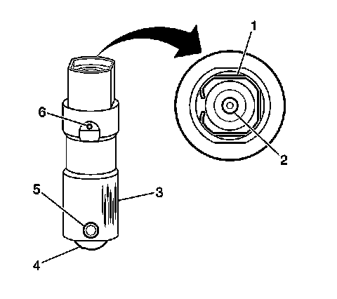
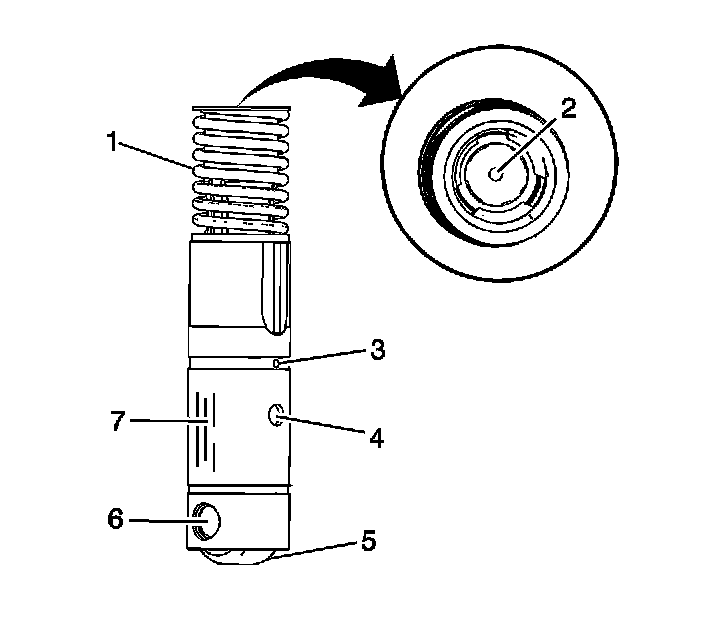

48. Valve Lifter and Guide Cleaning and Inspection
Valve Lifters and Guides Cleaning and Inspection (RPO LC9/LY5/LMG/L76/L92)
Non Active Fuel Management Valve Lifters

Important: Components that are to be used again must be marked, sorted or organized for assembly.
1. Clean the components in cleaning solvent.
Caution: Refer to Safety Glasses and Compressed Air Caution.
2. Dry the components with compressed air.
3. Inspect the valve lifters for the following conditions:
^ Bent or broken clip (1)
^ Worn pushrod socket (2)
^ Scuffed or worn sides (3)
If the valve lifter shows wear, inspect the engine block lifter bores for wear or damage.
^ Flat spots on the roller (4)
^ Loose or damaged pin (5)
^ Plugged oil hole (6)
^ Worn or damaged roller bearing
The roller should rotate freely with no binding or roughness.
Active Fuel Management Valve Lifters

Important: Components that are to be used again must be marked, sorted or organized for assembly.
1. Clean the components in cleaning solvent.
Caution: Refer to Safety Glasses and Compressed Air Caution.
2. Dry the components with compressed air.
3. Inspect the valve lifters for the following conditions:
^ Broken or collapsed spring (1)
^ Worn pushrod socket (2)
^ Plugged lubrication hole (3)
^ Plugged lifter oil-switching hole (4)
^ Flat spots on the roller (5)
^ Worn or damaged roller bearing (6)
The roller should rotate freely with no binding or roughness.
^ Scuffed or worn sides (7)
Valve Guides
Inspect the valve lifter guides for the following conditions:
^ Cracks or damage
^ Excessive wear in the lifter mounting bores